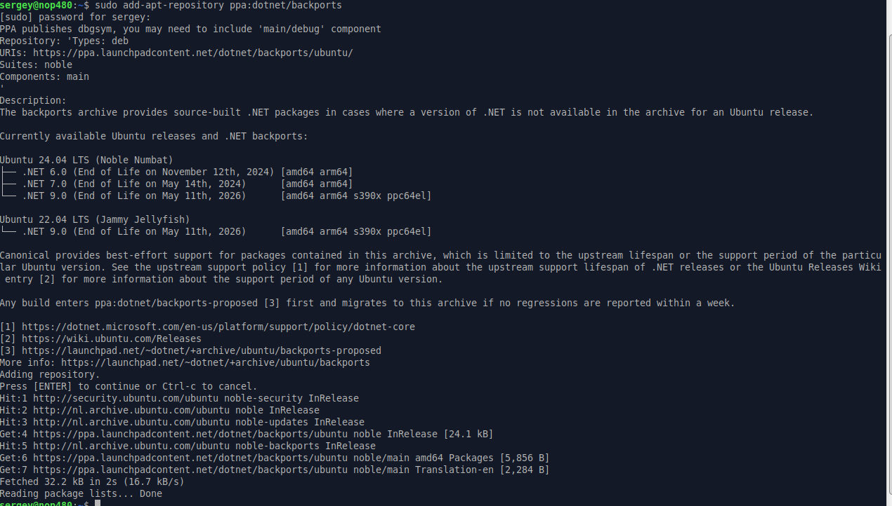
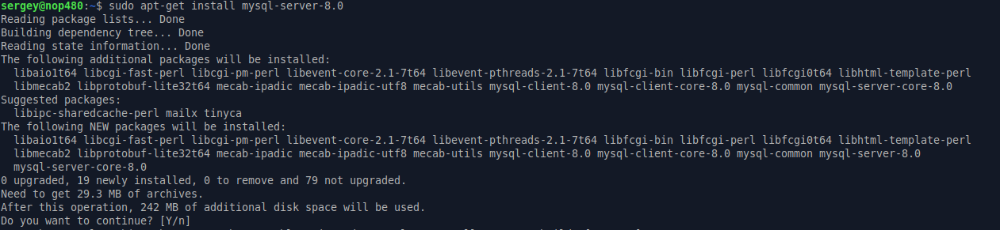
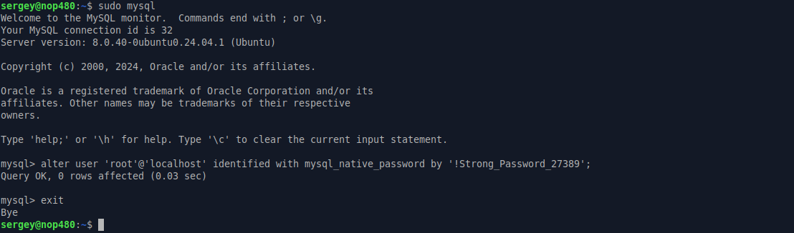
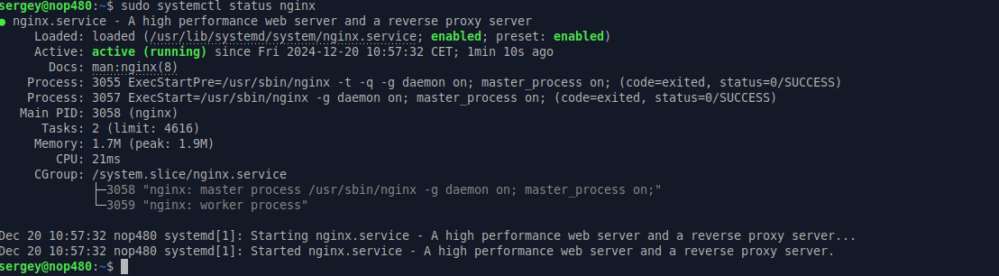
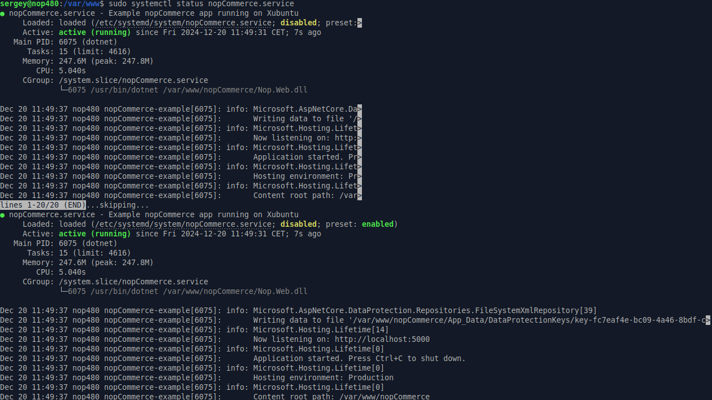

在 Linux 上安裝
本章節將以 Xubuntu 22.04 為例，說明如何在 Linux 系統上安裝 nopCommerce 軟體：
安裝與設定軟體
.NET 可於 Ubuntu 的 .NET backports 套件儲存庫中取得。
新增 .NET Repository
開啟終端機並執行以下指令：
sudo add-apt-repository ppa:dotnet/backports

安裝 .NET Core Runtime
更新可用於安裝的產品，然後安裝 .NET runtime：
sudo apt-get update
sudo apt-get install -y aspnetcore-runtime-9.0
Note
如果您遇到錯誤，請參閱 Install .NET SDK or .NET Runtime on Ubuntu 頁面上的詳細資訊。
您可以使用下列指令查看所有已安裝的 .Net Core runtime：
dotnet --list-runtimes
安裝 MySql Server
安裝 MySql server 8.0 版本：
sudo apt-get install mysql-server-8.0

預設情況下，root 的密碼是空的；讓我們來設定它。執行以下指令以存取 MySQL 提示字元：
sudo mysql
執行以下的 ALTER USER 指令，將 root 使用者的驗證方式切換為 mysql_native_password，此方式會使用密碼進行驗證。請將 ‘password’ 取代為您想要設定的新密碼，並確保密碼前後保留單引號：
ALTER USER 'root'@'localhost' IDENTIFIED WITH mysql_native_password BY 'password';
Note
為您的 MySQL root 使用者選擇一個高強度且唯一的密碼非常重要。強密碼長度應至少為 12 個字元，並包含大小寫字母、數字及特殊字元的組合。
輸入 exit 並按下 Enter 鍵以離開 MySQL 提示字元。

Note
如果您在設定 MySql server 的 root 密碼時遇到問題，請閱讀以下文章： 如何重設 Root 密碼 以及 MySQL 錯誤：'Access denied for user 'root'@'localhost'。
安裝 nginx
安裝 nginx 套件：
sudo apt-get install nginx

執行 nginx 服務：
sudo systemctl start nginx
並檢查其狀態：
sudo systemctl status nginx

若要將 nginx 設定為反向代理以轉發請求至您的 ASP.NET Core 應用程式，請修改 /etc/nginx/sites-available/default。使用文字編輯器開啟該檔案，並將內容取代為以下程式碼：
# Default server configuration
#
server {
listen 80 default_server;
listen [::]:80 default_server;
server_name nopCommerce.com;
location / {
proxy_pass http://localhost:5000;
proxy_http_version 1.1;
proxy_set_header Upgrade $http_upgrade;
proxy_set_header Connection keep-alive;
proxy_set_header Host $host;
proxy_cache_bypass $http_upgrade;
proxy_set_header X-Forwarded-For $proxy_add_x_forwarded_for;
proxy_set_header X-Forwarded-Proto $scheme;
}
# SSL configuration
#
# listen 443 ssl default_server;
# listen [::]:443 ssl default_server;
#
# Note: You should disable gzip for SSL traffic.
# See: https://bugs.debian.org/773332
#
# Read up on ssl_ciphers to ensure a secure configuration.
# See: https://bugs.debian.org/765782
#
# Self signed certs generated by the ssl-cert package
# Don't use them in a production server!
#
# include snippets/snakeoil.conf;
}
取得 nopCommerce
建立一個目錄：
sudo mkdir /var/www/nopCommerce
下載並解壓縮 nopCommerce：
cd /var/www/nopCommerce
sudo wget https://github.com/nopSolutions/nopCommerce/releases/download/release-4.90.4/nopCommerce_4.90.4_NoSource_linux_x64.zip
sudo apt-get install unzip
sudo unzip nopCommerce_4.90.4_NoSource_linux_x64.zip
建立幾個用來執行 nopCommerce 的目錄：
sudo mkdir bin
sudo mkdir logs
變更檔案權限：
cd ..
sudo chgrp -R www-data nopCommerce/
sudo chown -R www-data nopCommerce/
建立 nopCommerce 服務
建立 /etc/systemd/system/nopCommerce.service 檔案，並填入以下內容：
[Unit]
Description=Example nopCommerce app running on Xubuntu
[Service]
WorkingDirectory=/var/www/nopCommerce
ExecStart=/usr/bin/dotnet /var/www/nopCommerce/Nop.Web.dll
Restart=always
# Restart service after 10 seconds if the dotnet service crashes:
RestartSec=10
KillSignal=SIGINT
SyslogIdentifier=nopCommerce-example
User=www-data
Environment=ASPNETCORE_ENVIRONMENT=Production
Environment=DOTNET_PRINT_TELEMETRY_MESSAGE=false
[Install]
WantedBy=multi-user.target
啟動該服務：
sudo systemctl start nopCommerce.service
檢查 nopCommerce 服務狀態：
sudo systemctl status nopCommerce.service

重新啟動 nginx 伺服器：
sudo systemctl restart nginx
現在所有設定已就緒，您可以繼續進行商店的安裝與設定。
安裝流程
nopCommerce 的後續安裝流程與 Windows 上的安裝流程相同；您可以參考 this link 中的說明。
疑難排解
Gdip
如果您在 RichText Box 中載入圖片時遇到問題（類型初始化器 'Gdip' 拋出了例外狀況），只需安裝 libgdiplus 程式庫即可：
sudo apt-get install libgdiplus
SSL
如果您希望在網站上使用 SSL，請別忘了將 appsettings.json 檔案中的 UseProxy 設定值設為 true。